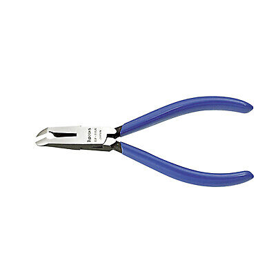
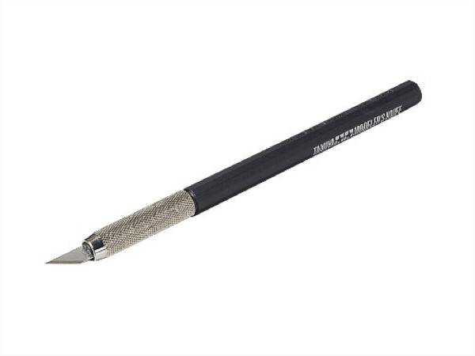
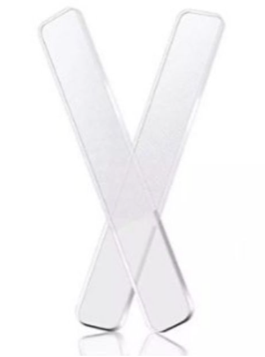
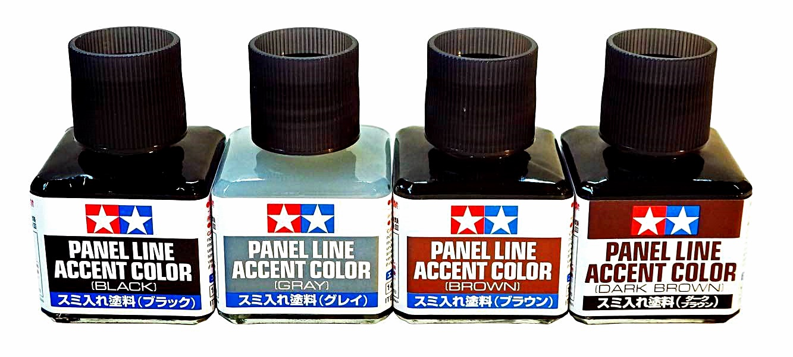
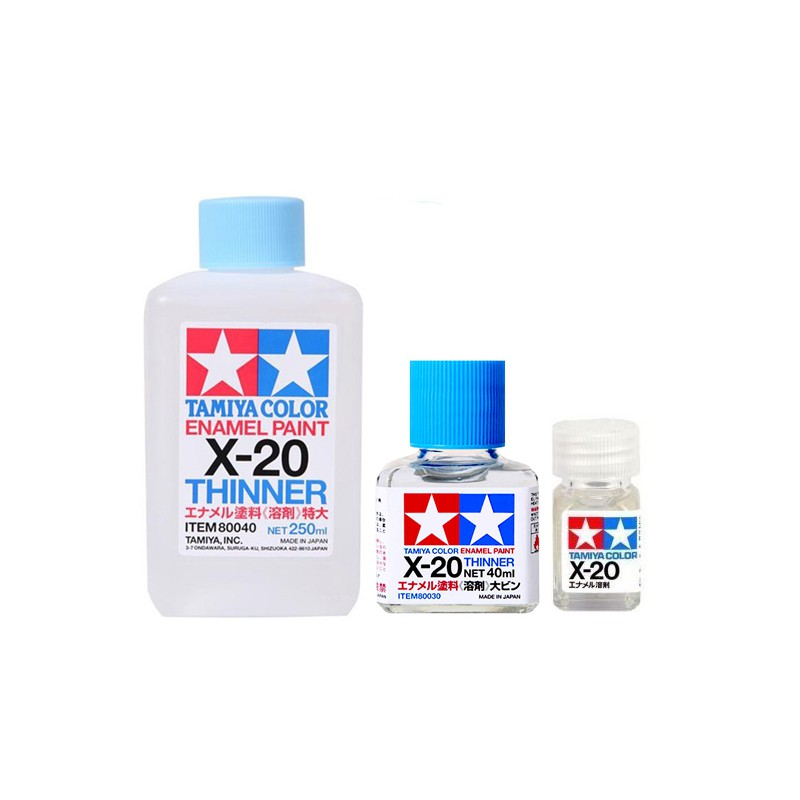
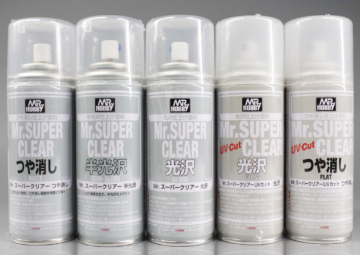

When assembling for the first time, many people will inevitably pick up equipment at home. I am also one of them. First, there is a simple method because I have never done it before, about 2-4 equipment only. Use sharp nail clippers to cut the pieces. Exit the runner panel. Then use the cutter to cut off the excess seams. and sometimes will use a rasp to help again and use the pen to cut out the lines that come out is enough. But if compared to the YouTube reviews we've seen, you'll see that they're quite different. Because keep the work quite detailed, including cutting, polishing, removing joints with specific equipment for plastic models.
when we passed the starting point Most builders tend to want a house full of first-generation plastic model friends. To make the job look as beautiful as the villagers who follow YouTube Of course, we will continue to look for the right equipment for plastic modelwork. The equipment will be as follows.
1. Plastic Nippers Used to cut pieces out of runner panels. Personally, I have to buy it because the quality is much better than using a nail clipper.
2. Art knife is used for cutting the joint between the panel and the runner panel. With an art knife, it cuts much better than a cutter. because the blade will hold tightly and does not move back and forth during use Allows us to control the cutting direction well.
3. Raspglass for polishing the cut marks left from using the Art Knife to be smooth with the surrounding parts, making our work more beautiful and neat.
4. Panel Line Accent Add realism to the assembly model, whether it's a ship model, a tank model, an airplane model, military figures, various plastic works. Easier to use than the cutting pen, just poke the tip of the brush attached to the cap. Let the solution flow along the groove and wipe it off. It is an enamel color that adjusts the concentration to be suitable for the ink. Just shake the bottle to apply the ink. Match and use the fine brush attached to the cap to apply ink immediately. It's ideal for highlighting flat lines and other details that will give your designs more real depth. The color has been reduced to the ideal viscosity and can be easily applied with a brush on the bottle cap. Once any excess has dried, it can be cleaned up using X20 thinner.
5. Tamiya X-20 Thinner, thinner, enamel formula (oil formula)used for mixing oil-based paints. or can be used to remove panelline stains as well Just soak a cotton pad with thinner and wipe the pad on the panelline stains.
6. Spray clear A small tip for those who do not have time to paint their favorite plastic model. What can we do to make the assembled Gunpla look more beautiful? A simple way is to spray a Flat Top Coat, or as locals call it. spray clear side On our model, there are actually both clear and semi-gloss, but let's talk about the clear side first. spraying Beginners may think that it would be difficult. Or have to use a lot of budget. Really, it's not expensive. No airbrush required. Use spray cans here. Each bottle costs a few hundred baht and can be used for a long time. But it has to be a spray for plastic (FOR PLASTIC). Other sprays will surely bite our plastic.
Have you fun assembling PLASTIC MODEL KITS!!!